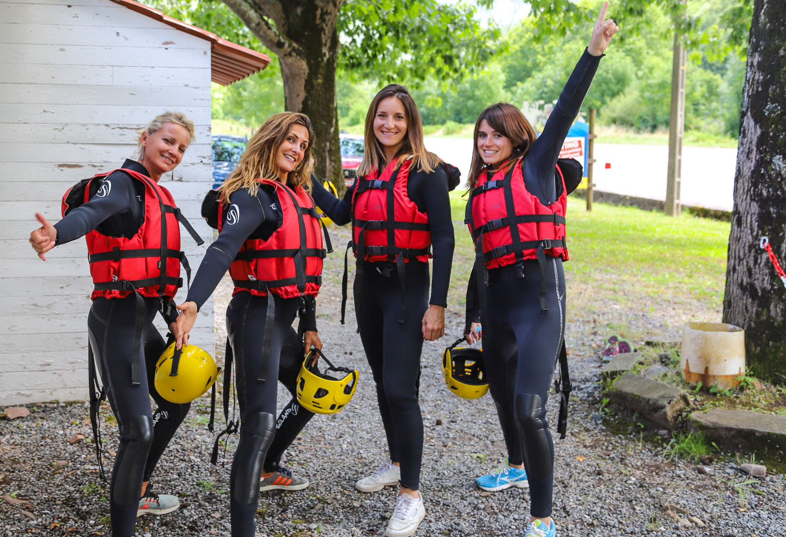
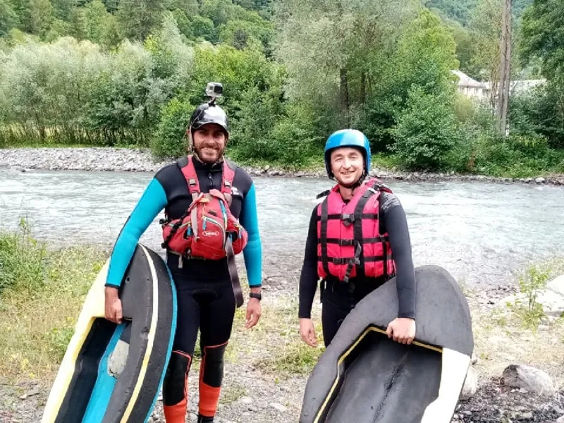

This site plan caters to adventure enthusiasts and nature lovers, offering a perfect blend of excitement and scenic beauty. The target audience includes thrill-seekers seeking an authentic Alaskan experience. Personas may range from outdoor enthusiasts craving adrenaline to nature photographers capturing the river's timeless beauty. The value lies not just in the rapids but in the immersive connection with nature, fostering unforgettable memories.